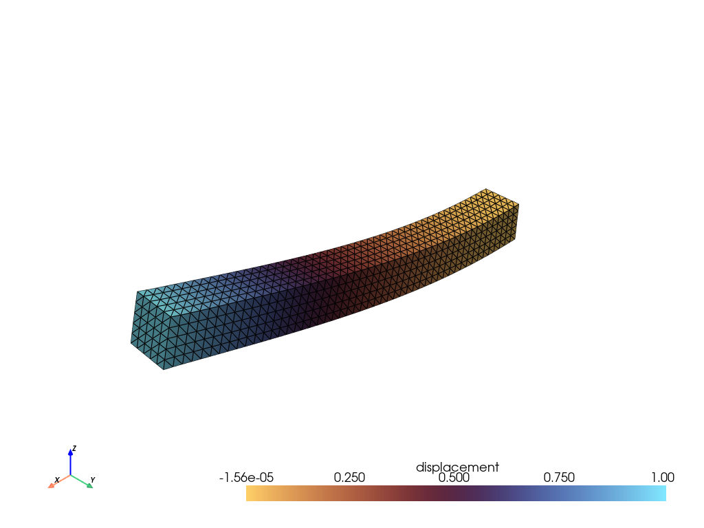

Hyperelasticity¤
Info
This example uses PETSc to solver the nonlinear problem. Please ensure that petsc4py is installed to run this example.
import time
from typing import NamedTuple
import jax
import jax.numpy as jnp
import numpy as np
import pyvista as pv
from jax_autovmap import autovmap
from petsc4py import PETSc
from tatva import Mesh, Operator, element, sparse
jax.config.update("jax_enable_x64", True)
In this notebook, we solve a hyperelastic problem where the boundary conditions are enforced via condensation. The example consists of a 3D rectangular beam
The problem can be formulated as the minimization of the total potential energy subject to kinematic constraints,
Mesh generation¤
We will create a structured mesh of a rectangular box and then convert it into a tetrahedral mesh.
View mesh generation functions
def create_rectangle_box_tetrahedron_mesh(
lengths: tuple[float, float, float], nb_elems: tuple[int, int, int]
) -> Mesh:
x_length, y_length, z_length = lengths
nx, ny, nz = nb_elems
x_rng = np.linspace(-x_length / 2, x_length / 2, nx + 1)
y_rng = np.linspace(-y_length / 2, y_length / 2, ny + 1)
z_rng = np.linspace(0, z_length, nz + 1)
Z, Y, X = np.meshgrid(z_rng, y_rng, x_rng, indexing="ij")
nodes = np.stack([X, Y, Z], axis=-1).reshape(-1, 3)
stride_x = 1
stride_y = nx + 1
stride_z = (nx + 1) * (ny + 1)
k_idx, j_idx, i_idx = np.meshgrid(
np.arange(nz), np.arange(ny), np.arange(nx), indexing="ij"
)
n0 = (i_idx * stride_x + j_idx * stride_y + k_idx * stride_z).flatten()
n1 = n0 + stride_x
n2 = n0 + stride_y
n3 = n2 + stride_x
n4 = n0 + stride_z
n5 = n4 + stride_x
n6 = n4 + stride_y
n7 = n6 + stride_x
t1 = jnp.stack([n0, n1, n3, n7], axis=-1)
t2 = jnp.stack([n0, n1, n7, n5], axis=-1)
t3 = jnp.stack([n0, n5, n7, n4], axis=-1)
t4 = jnp.stack([n0, n3, n2, n7], axis=-1)
t5 = jnp.stack([n0, n2, n6, n7], axis=-1)
t6 = jnp.stack([n0, n6, n4, n7], axis=-1)
all_tets = jnp.stack([t1, t2, t3, t4, t5, t6], axis=1)
elements = all_tets.reshape(-1, 4)
return Mesh(coords=jnp.array(nodes), elements=jnp.array(elements))
Material model¤
We will use a Neo-Hookean material model for our hyperelastic simulation. The strain energy density function for a Neo-Hookean material is given by:
where \(I_1\) is the first invariant of the right Cauchy-Green deformation tensor \(C = F^T F\), \(J\) is the determinant of the deformation gradient \(F\), and \(\mu\) and \(\lambda\) are the Lamé parameters of the material.
class Material(NamedTuple):
mu: float
lmbda: float
@autovmap(grad_u=2)
def compute_deformation_gradient(grad_u):
I = jnp.eye(3)
F = I + grad_u
return F
@autovmap(grad_u=2, mu=0, lmbda=0)
def neo_hookean_density(grad_u, mu, lmbda):
F = compute_deformation_gradient(grad_u)
J = jnp.linalg.det(F)
C = F.T @ F
I1 = jnp.trace(C)
return (mu / 2) * (I1 - 3 - 2 * jnp.log(J)) + (lmbda / 2) * (jnp.log(J)) ** 2
Create mesh and operator¤
We consider a rectangular box of dimensions 10 x 1 x 1, discretized into a structured mesh with 50 elements along the length and 5 elements along the width and height. We then create an operator for the tetrahedral elements.
L, W, H = 10.0, 1.0, 1.0
nx, ny, nz = 50, 5, 5
mesh = create_rectangle_box_tetrahedron_mesh((L, H, W), (nx, ny, nz))
tet_elem = element.Tetrahedron4()
op = Operator(mesh, tet_elem)
mat = Material(mu=500.0, lmbda=1000.0)
n_dofs_per_node = 3
n_nodes = mesh.coords.shape[0]
n_dofs = n_nodes * n_dofs_per_node
Define boundary conditions¤
We will fix the bottom face (z=0) and apply a displacement load on the top face (z=L)
x_min, x_max = jnp.min(mesh.coords[:, 0]), jnp.max(mesh.coords[:, 0])
fixed_nodes = jnp.where(jnp.isclose(mesh.coords[:, 0], x_min))[0]
load_nodes = jnp.where(jnp.isclose(mesh.coords[:, 0], x_max))[0]
fixed_dofs = jnp.concatenate(
[fixed_nodes * 3, fixed_nodes * 3 + 1, fixed_nodes * 3 + 2]
)
load_dofs = load_nodes * 3 + 2 # Apply load in z-direction
prescribed_dofs = jnp.unique(jnp.concatenate([fixed_dofs, load_dofs]))
free_dofs = jnp.setdiff1d(jnp.arange(n_dofs), prescribed_dofs)
applied_u_load = 1.0
Sparse Jacobian assembly using coloring¤
We will define the total energy of the system as a function of the free degrees of freedom. The residual will be the gradient of the total energy, and the Jacobian (stiffness matrix) will be the Hessian of the total energy. We will use JAX's automatic differentiation to compute these quantities and use sparse coloring to efficiently compute the Hessian.
@jax.jit
def total_energy(u_free):
u_full = jnp.zeros(n_dofs).at[free_dofs].set(u_free)
u_full = u_full.at[load_dofs].set(applied_u_load)
u = u_full.reshape(-1, n_dofs_per_node)
u_grad = op.grad(u)
psi = neo_hookean_density(u_grad, mat.mu, mat.lmbda)
return op.integrate(psi)
residual_fn = jax.jit(jax.grad(total_energy))
sparsity_pattern = sparse.create_sparsity_pattern(mesh, n_dofs_per_node=3)
reduced_sparsity = sparse.reduce_sparsity_pattern(sparsity_pattern, free_dofs)
colored_matrix = sparse.ColoredMatrix.from_csr(reduced_sparsity)
hessian_fn = sparse.jacfwd(
fn=residual_fn, colored_matrix=colored_matrix, color_batch_size=int(colored_matrix.colors.max()) + 1
)
hessian_fn = jax.jit(hessian_fn)
Solve the nonlinear system using PETSc SNES¤
We will use the PETSc SNES solver to solve the nonlinear system. We will define callback functions for computing the residual and Jacobian, which will call our JAX functions to compute these quantities.
def snes_jacobian(snes, x, J, P):
u = jnp.array(x.array_r)
K_sparse = hessian_fn(u)
J.zeroEntries()
J.setValuesCSR(
np.asarray(K_sparse.indptr, dtype="int32"),
np.asarray(K_sparse.indices, dtype="int32"),
np.asarray(K_sparse.data, dtype="float64"),
)
J.assemblyBegin()
J.assemblyEnd()
return PETSc.Mat.Structure.SAME_NONZERO_PATTERN
def snes_residual(snes, x, f):
u = jnp.array(x.array_r)
f.array = np.array(residual_fn(u))
snes = PETSc.SNES().create(comm=PETSc.COMM_SELF)
opts = PETSc.Options()
opts["snes_monitor"] = None
snes.setFromOptions()
x_sol = PETSc.Vec().createSeq(len(free_dofs))
f_res = PETSc.Vec().createSeq(len(free_dofs))
snes.setFunction(snes_residual, f_res)
J = PETSc.Mat().createAIJ([len(free_dofs), len(free_dofs)], comm=PETSc.COMM_SELF)
J.setPreallocationCSR((reduced_sparsity.indptr, reduced_sparsity.indices))
J.setUp()
snes.setJacobian(snes_jacobian, J, J)
snes.setType("newtonls")
ksp = snes.getKSP()
pc = ksp.getPC()
ksp.setType("preonly")
pc.setType("lu")
Solve the system¤
We will now call the SNES solver to solve the nonlinear system. We will also measure the time taken for the solve and the number of iterations taken by SNES.
start_time = time.time()
snes.solve(None, x_sol)
end_time = time.time()
elapsed = end_time - start_time
print(f"Solve completed in {elapsed:.2f} seconds")
print(f"SNES iterations: {snes.getIterationNumber()}")
0 SNES Function norm 4.983305462575e+02
1 SNES Function norm 2.411042305196e+01
2 SNES Function norm 8.045100858158e+00
3 SNES Function norm 2.664015247863e-01
4 SNES Function norm 9.509521602571e-03
5 SNES Function norm 1.089711908670e-05
6 SNES Function norm 2.262540836964e-10
Solve completed in 2.66 seconds
SNES iterations: 6
Visualize the deformed configuration and stress distribution¤
We will visualize the deformed configuration and the stress distribution using PyVista. The stress distribution will be visualized as a scalar field on the cells of the mesh.
Visualize the deformed shape using PyVista
cells = np.hstack([np.full((mesh.elements.shape[0], 1), 4), mesh.elements]).flatten()
cell_types = np.full(mesh.elements.shape[0], pv.CellType.TETRA)
grid = pv.UnstructuredGrid(cells, cell_types, np.array(mesh.coords, dtype=np.float64))
u_current = x_sol.array_r.copy()
u_full = jnp.zeros(n_dofs)
u_full = u_full.at[free_dofs].set(u_current)
u_full = u_full.at[load_dofs].set(applied_u_load)
u_current = u_full.reshape(-1, n_dofs_per_node)
grid.point_data["displacement"] = np.array(u_current)
grad_u = op.grad(u_current)
grid = grid.warp_by_vector("displacement", factor=2.0)
plotter = pv.Plotter()
plotter.add_mesh(
grid,
show_edges=True,
scalars="displacement",
component=2,
cmap="managua",
)
plotter.add_axes()
plotter.show()
Widget(value='<iframe src="http://localhost:39157/index.html?ui=P_0x7c888a49f440_8&reconnect=auto" class="pyvi…
